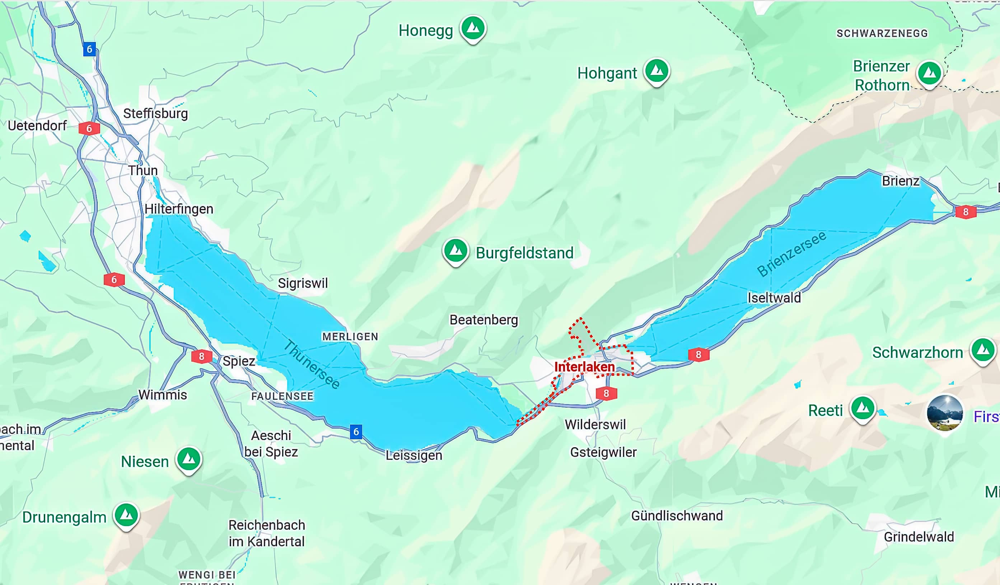
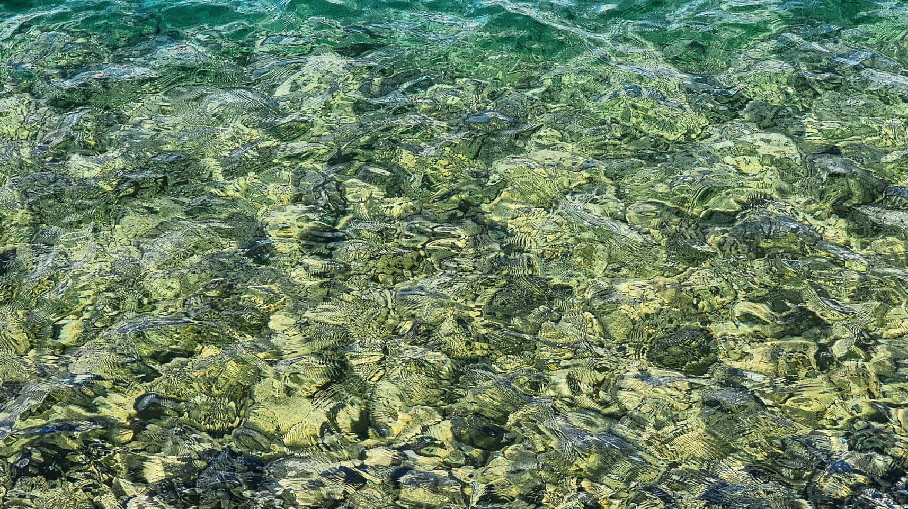
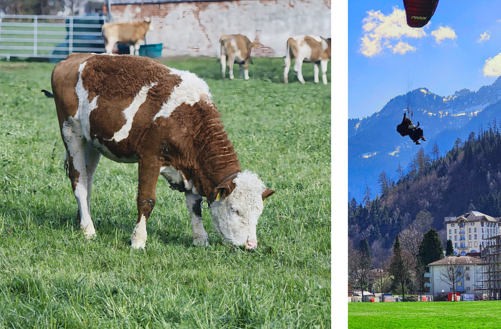
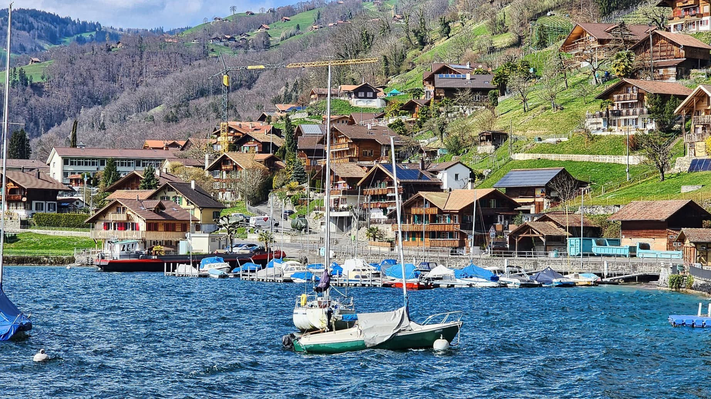

Our driving trip through five countries
We leased a car in Paris and spent a month driving through France, Switzerland, Germany, the Netherlands, and Belgium. Each country offered its own unique charm, from the historic towns of Alsace in France to the stunning alpine scenery of Switzerland, the picturesque villages along the Rhine in Germany, the vibrant tulip fields in the Netherlands, and the medieval architecture of Belgium. This road trip allowed us to experience a diverse range of cultures, cuisines, and landscapes, making it an unforgettable adventure.
Interlaken

Interlaken is on a narrow stretch of stretch of valley between Lake Thun and Lake Brienz.

Lake Thun and lake Brienz receive meltwater from surrounding glaciers in the Bernese Alps. The glacial flour suspended in the water scatters sunlight, giving the lake its stunning turquoise color.

Cows grazed peacefully as paragliders soared above—a tranquil alpine scene. One afternoon the cows vanished, and over dinner we wondered if our steaks had come straight from the meadow! 😁😜

Lake Thun’s waters rippled with spring winds—too choppy for boats in April, but perfect for admiring its turquoise beauty from the shore.
Mount Jungfrau’s prominent 13,642-foot peak disappears into the clouds, a majestic sight from Interlaken.
Travel tips
- Stay in Interlaken for easy access to nearby highlights like Lauterbrunnen and Mürren.
- Villages along Lake Thun offer more varied activities than those on Lake Brienz.
- Most restaurants open only after 7 pm, so stocking up at Coop or Migros is handy when you’re tired and hungry.
- Pack layers and waterproof gear to be ready for ever-changing mountain weather.
Leave a Comment
Share your thoughts about Interlaken below. Your email will not be published.